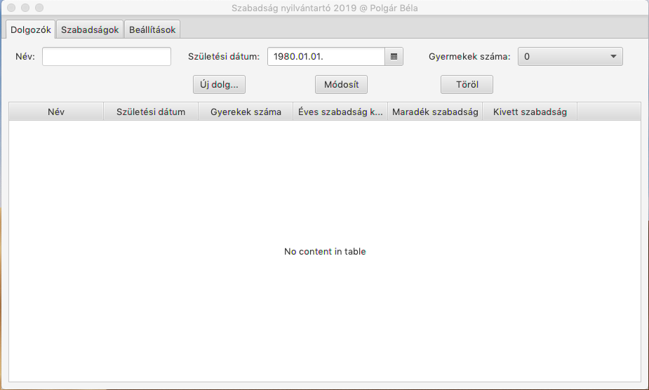
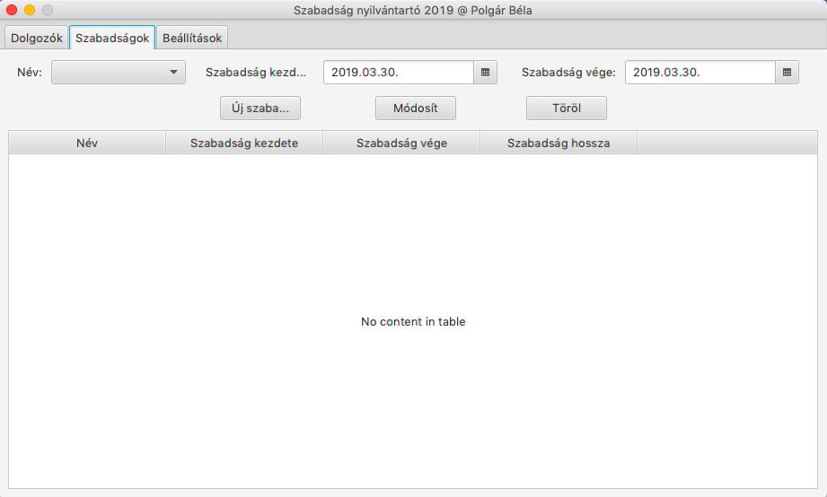
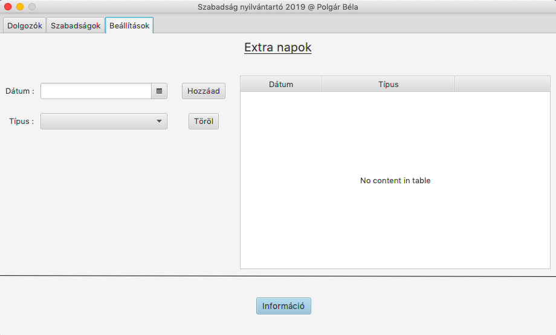

Szabadság nyílvántartó 2019 felhasználói dokumentáció
A program kiszámítja a dolgozó 2019. évi szabadság keretét, követi annak változását szabadságainak függvényében, illetve nyílvántartja a dolgozó szabadságait is, figyelembe véve a munkanapokat, nemzeti ünnepeket és a ledolgozásos munkanapokat.
- Dolgozók fül
- Szabadságok fül
- Beállítások fül
Dolgozók fül funkciói
Ezen az oldalon a dolgozók adatait láthatjuk, szerkeszthetjük, új dolgozókat vihetünk fel illetve törölhetjük öket.

Az oldalon található beviteli mezők:
- Név - A dolgozó neve
- Születési dátum - A dolgozó születési dátuma
- Gyermekek száma - A dolgozó gyermekeinek száma (0 - 9)
Az oldalon található gombok és funkcióik :
- Új dolgozó - Új dolgozó hozzáadása
- Módosít - A táblázatból kiválasztott dolgozó adatainak módosítása
- Töröl - A táblázatból kiválasztott dolgozó törlése
A táblázat oszlopai :
- Név - A dolgozó neve
- Születési dátum - A dolgozó születési dátuma
- Gyerekek száma - A dolgozó gyermekeinek száma
- Éves szabadság keret - A dolgozó éves szabadság keret
- Maradék szabadság - A dolgozó maradék szabadságának száma az évben
- Kivett szabadság - A dolgozó kivett szabadságainak száma az adott évben
Szabadságok fül funkciói
Ezen az oldalon a dolgozók szabadságait láthatjuk, szerkeszthetjük, új szabadságot adhatunk hozzá illetve törölhetünk.

Az oldalon található beviteli mezők:
- Név - A dolgozó neve
- Szabadság kezdete - A szabadság kezdeti dátuma
- Szabadság vége - A szabadság végének a dátuma
Az oldalon található gombok és funkcióik :
- Új szabadság - Új szabadság hozzáadása
- Módosít - A táblázatból kiválasztott szabadság adatainak módosítása
- Töröl - A táblázatból kiválasztott szabadság törlése
A táblázat oszlopai :
- Név - A dolgozó neve
- Szabadság kezdete - A szabadság kezdeti dátuma
- Szabadság vége - A szabadság végének a dátuma
- Szabadság hossza - A szabadságot érintő munkanapok száma
Beállítások fül funkciói
Ezen az oldalon azokat a napokat adhatjuk hozzá illetve távolíthatjuk el a programból, amik vagy munkaszüneti napok, vagy áthelyezett munkanapok, így ezeket figyelembe kell venni a szabadságok kiadásánál. (Amennyiben munkaszüneti is van a szabadság időtartamába, úgy az a nap(ok) nem csökkenti a maradék szabadságok számát.

Az oldalon található beviteli mezők:
- Dátum - Az extranap dátuma
- Típus - Az extranap típusa (munkaszüneti nap vagy ledolgozás, áthelyezett munkanap)
Az oldalon található gombok és funkcióik :
- Hozzáad - Új extranap hozzáadása
- Töröl - A táblázatból kiválasztott extranap törlése
- Információ - Az program készítőjének adatai, illetve felhasználói útmutató megnyítása
A táblázat oszlopai :
- Dátum - Az extranap dátuma
- Típus - Az extranap típusa (munkaszüneti nap vagy ledolgozás, áthelyezett munkanap)
Vissza az elejére